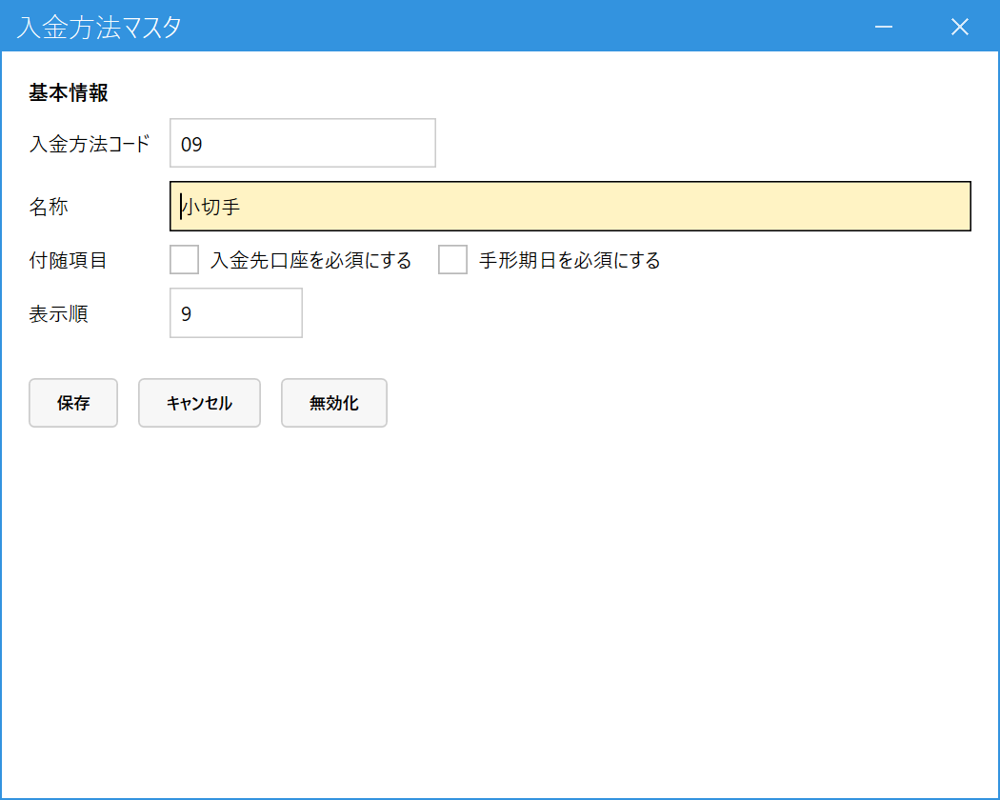

Register Payment Methods (Payment Method Master)
When to use this
Use this to add or rename the choices that appear in "Payment method (入金方法)" in Receipt Entry (入金入力), such as cash, bank transfer, bill, and offset. No program change is needed.
For example, you can add new payment methods such as "Check (小切手)" or "Credit card (クレジットカード)".
Use this to add or rename the choices that appear in "Payment method (入金方法)" in Receipt Entry (入金入力), such as cash, bank transfer, bill, and offset. No program change is needed.
For example, you can add new payment methods such as "Check (小切手)" or "Credit card (クレジットカード)".
1.Register a payment method
From the main menu, open Payment Method Master (入金方法マスタ) under Master Management (マスタ管理). Enter the payment method code (入金方法コード) and press Enter (if it is already registered, its details appear; if not, continue entering the details as a new registration).

- Payment method code (入金方法コード): Required. A code that your company assigns.
- Name (名称): The name shown in the Receipt Entry choices.
- Additional items (付随項目): The items that must be entered when this payment method is chosen. "Require receiving account (入金先口座を必須にする)" (for example, bank transfer) and "Require bill due date (手形期日を必須にする)" (for example, bill). If you turn on neither, a payment can be registered with just the amount (for example, cash).
- Display order (表示順): The order in which the choices appear (smaller numbers come first).
- Press Save (保存) to register. When you stop using a payment method, deactivate (無効化) it (past receipts remain).
A payment method with "Require bill due date (手形期日を必須にする)" turned on does not appear in the choices of Itemized Receipt (明細入金) (because Itemized Receipt has no field for entering a bill due date).
Currently, "Cash (現金), Bank transfer (振込), Bill (手形), Offset (相殺), and Transfer fee (振込手数料)" are provided. How to handle "Transfer fee (振込手数料)" (how to deal with fee differences) has not been decided yet.